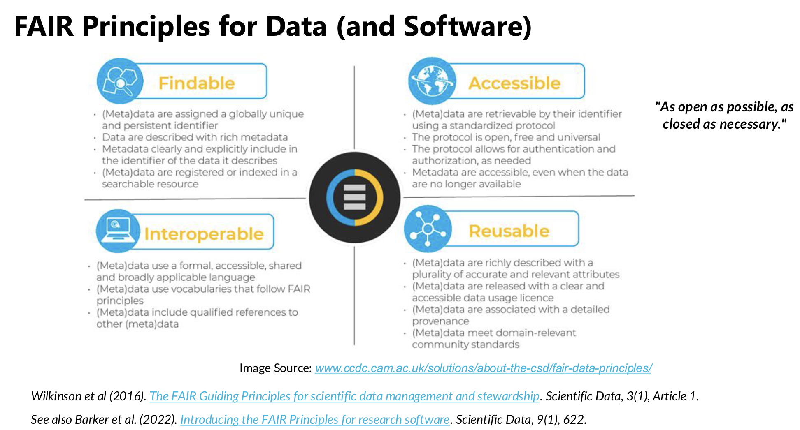
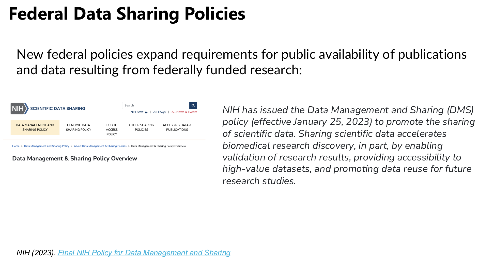
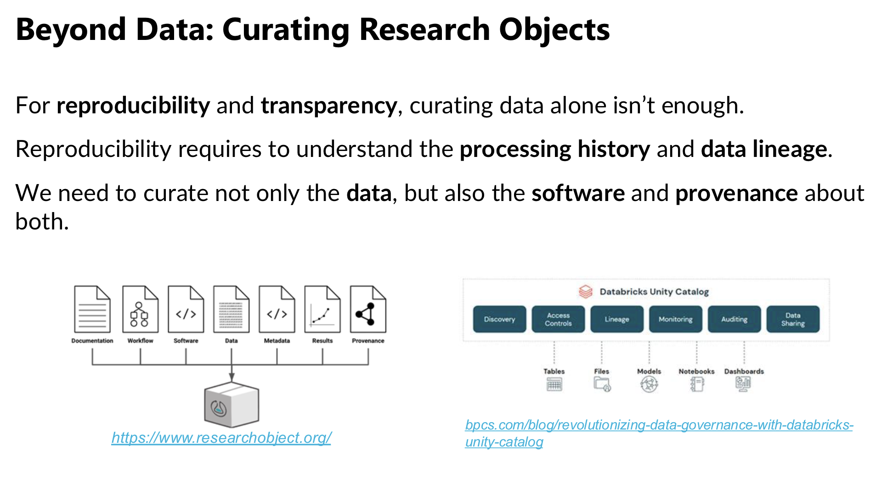
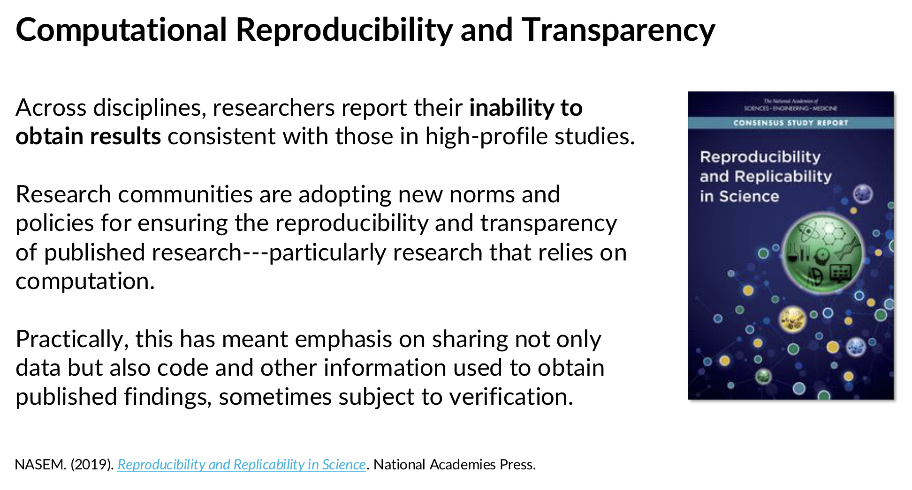
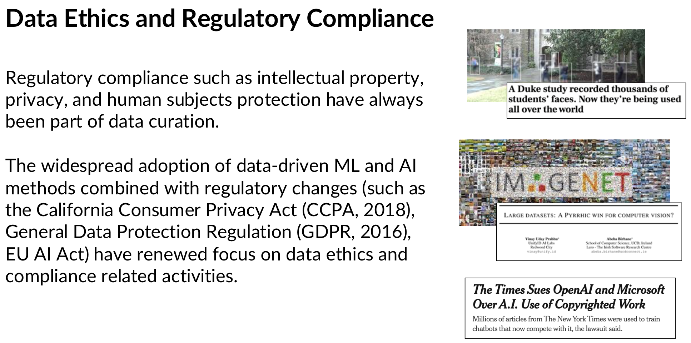
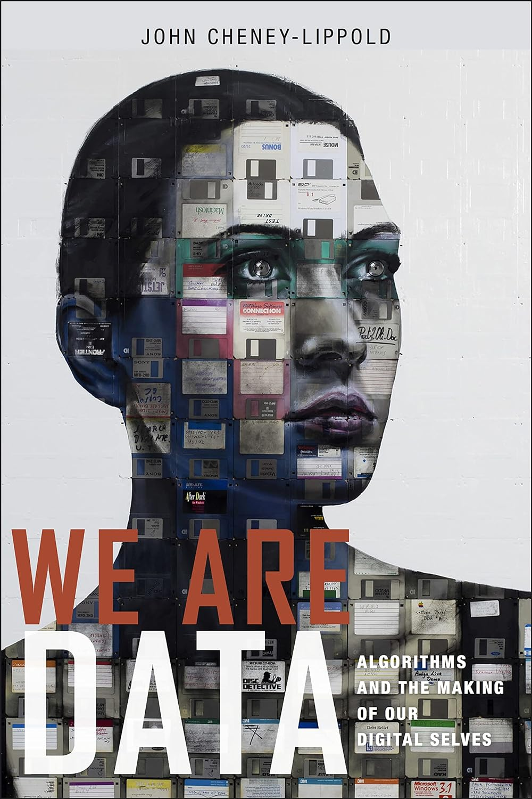
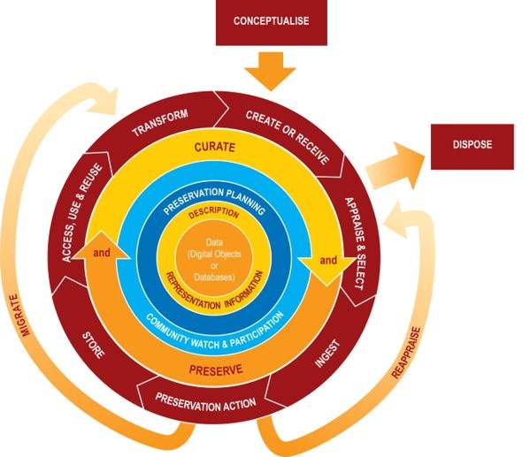
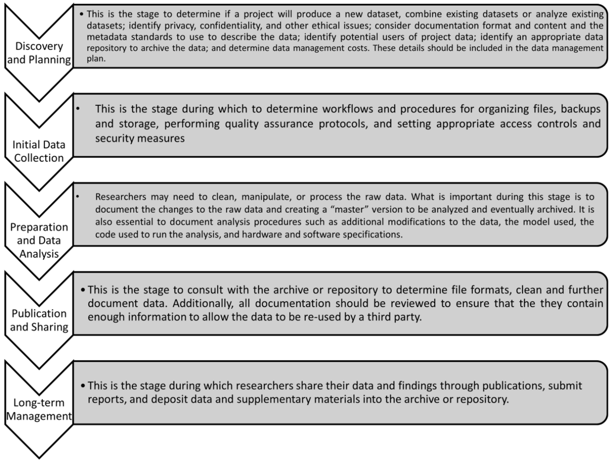

Data Stewardship: An Overview
LIS 4/5493: Data Stewardship
Welcome!
Dr. Manika Lamba
Office: Room 118E, Bizzell Library
Office hours: Tuesdays & Thursdays (2:30-5 PM) or by appointment
Email: manika@ou.edu
Research interests: information organization, digital libraries, critical data practices, science of science using text mining, NLP, & machine learning
What is Data Stewardship?
Data Stewardshipis concerned with all aspects of the creation, management, analysis, and communication of data focusing particularly on the application ofcomputational methods to digital dataData Stewardship = Data Management + Data Curation + Data Analytics
- Data management: Ensuring the management of data in order to better support the analysis of data
- Data curation: Ensuring that data can be efficiently and reliably found and used
- Data analytics: Employing specific techniques to extract knowledge from data
It includes among other things: acquisition and collection, modeling, workflow, provenance, validity and integrity, metadata, preservation, integration, retrieval, re- use, policy, standards, identifiers, format conversions, processing levels, supporting reproducibility, etc.
It includes active and on-going management of data through its lifecycle of interest and usefulness to scholarship, science, and education; curation activities enable data discovery and retrieval, maintain quality, add value, and provide for re-use over time.
Science of… vs Practice of…
The science of data stewardship:
research and development on new methods of data management and use;
draws on mathematical and engineering methods, but also on methods from social science, law, economics, and other disciplinesThe practice of data stewardship:
use and adaptation of data management methods to meet user needs and support data analyticsValues
Data analytics values: Extraction should be novel, fast, precise, accurate
Data stewardship values: Data should be efficient and reliable: findable, useable, legal (thereby supporting novelty, speed, precision, accuracy)
Importance of Data Stewardship
- Where real world interdisciplinary challenges are concerned, managerial & curatorial problems are acute:
Large amounts of rapidly changing data, often heterogeneous in nature and developed by different scientific communities, must be found, retrieved, authenticated, reformatted, integrated with other data and managed for effective use, and demonstrably reliable even after processing and preparation
- Supporting analysis, discovery, and use is an enormous challenge
. . . it involves the complex management of large-scale data storage and preservation, creation of metadata and tools for retrieval and context documentation, preparation of computationally accessible documentation of provenance and workflow, conducting reliable format conversions to support new tools and applications, the management of identifiers and validity checks that accommodate format changes, the integration of related data elements from substantially different data sources, and more. . . .
Importance of Data Stewardship (Cont.)
Without successful data management & curation, data analysis is not possible, it would be prohibitively expensive and and dangerously unreliable
Data Stewardship is the larger part of data science.
Not only Data Stewardship is essential for reliable efficient analysis, but most of the cost associated with using data is, by far, in management & curation, not analysis, and most of the workforce needs are, also by far, in management & curation, not analysis.
Broader Activities
Some of the broader activites in Data Stewardship includes:
Data Stewardship: Methods of Action
Analysis: To determine needs, and develop relevant data models and metadata, and reformat, correct, or update data.Documentation: To record essential information (typically via metadata)System design and implementation: To support all data curatorial activities To support the generation and use of data documentation and processing documentationPolicy: To specify objectives, procedures, practices, and formats.Process: To ensure success and efficiency by managing the development of appropriate organizational units and roles, providing training, advocating for change, and managing curatorial activities.
Data Stewardship Workforce
There is no single occupational category for [data stewardship] and no precise mapping between knowledge and skills needed for [data stewardship] and existing professions, careers, or job titles.
The knowledge and skills required of those engaged in [data stewardship] are dynamic and highly interdisciplinary. They include an integrated understanding of computing and information science, librarianship, archival practice, and the disciplines and domains generating and using data. Additional knowledge and skills for effective [data stewardship] are emerging in response to data-driven scholarship.
Who Does Data Work?
Some professional “data” jobs:
Data Scientist
Data/Business Analyst
Data Wrangler
Data Curator
Data Steward
Data Engineer
… ML, AI Engineer
and “database” jobs:
Database Engineer
Database Programmer
Database Architect
Database Administrator
and "library" jobs:
Research Data Services Librarian
Research Data Steward
Data Librarian
Data Scholarship Librarian
Digital Humanities Librarian
AI Librarian
Trends in Data Stewardship






What is Data?
We are Data
We are filled with data in today’s networked society
through our web activity, we are assigned gender, ethnicity, class, age, education level, and potential status of parent with x no. of children (digital trace data/digital footprint/digital breadcrumbs)
if internet metadata identifies a user as foreigner than they lose right to privacy afforded to U.S. citizens
who would have thought that class status, citizenship, ethnicity could be algorithmically understood?

John Cheney-Lippold. (2017). We are Data: algorithms and the making of our digital selves. New York University Press.
We are Data (Cont.)
We live in a world of ubiquitous networked communication
- technologies that constituent the Internet are so woven into the fabric of our daily lives, where for most of us, existing without seems unimaginable
We also live in a world of ubiquitous surveillance
- same technologies have helped spawn an impressive network of governmental, commercial, and unaffiliated infrastructures of mass observation and control
- most of what we do in this world has at least the capacity to be observed, recorded, analyzed, and stored in a databank
- HOW?
- storage is cheap
- computers are fast to analyze information in both real time & retrospective
- our daily activities that are mediated with software can be easily configured to record and report everything it sees upstream
- HOW?
John Cheney-Lippold. (2017). We are Data: algorithms and the making of our digital selves. New York University Press.
Data Lifecycle
Data Management Across Research Lifecycle
Data Visualization
Why Create Visualizations Generally?
Academic and Professional Organizations
- Association for Computing Machinery (ACM)
- Institute of Electrical and Electronics Engineers (IEEE)
- Association for Information Science & Technology (ASIS&T)
- [Domain and discipline specific organizations
- Biosciences, geosciences, social sciences, economics, etc.
- Research Data Alliance (RDA)
- Committee on Data (CODATA)
- National Digital Stewardship Alliance (NDSA)
Conferences: Computing and Databases
- ACM International Conference on Information & Knowledge Management (CIKM)
- ACM Special Interest Group on Management of Data (SIDMOD)
- Very Large Databases (VLDB)
- IEEE International Conference on Data Engineering (ICDE)
- ACM SIG on Human-Computer Interaction (SIGHCI)
- International Provenance and Annotation Workshop (IPAW)
- International Semantic Web Conference (ISWC)
- ACM Conference on Fairness, Accountability, and Transparency (FACCT)
- ACM Conference on Reproducibility and Replicability (REP)
Conferences: Digital Libraries, Curation, & Preservation
- ACM Joint Conference on Digital Libraries (JCDL)
- International Conference on Digital Preservation (iPres)
- International Association for Social Science Information Service and Technology (IASSIST)
- Open Repositories
Selected Journals
- Transactions on Database Systems (TODS)
- IEEE Transactions on Knowledge and Data Engineering (TKDE)
- CODATA Data Science Journal
- International Journal of Digital Curation (IJDC)
“Everyone wants to do the model work, not the data work”
- Data quality is essential in machine learning and AI
- Data often determines model performance, fairness, safety, scalability
- This is particularly acute in high-stakes domains
- Health, safety, environment
- However, data work is often undervalued and not incentivized
Sambasivan, N., et al. (2021). “Everyone wants to do the model work, not the data work”: Data Cascades in High-Stakes AI. Proceedings of the 2021 CHI Conference on Human Factors in Computing Systems, 1–15.